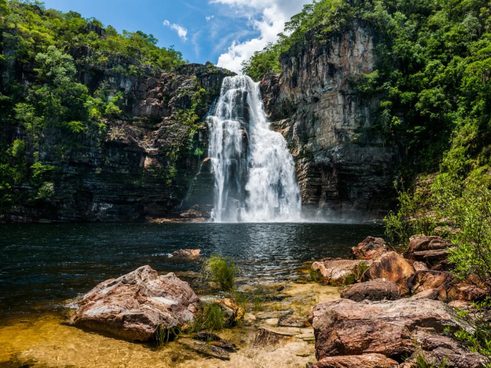

O estado de Goiás, localizado na região Centro-Oeste do Brasil, destaca-se por sua rica diversidade natural, cultural e econômica. Com um território marcado pelo bioma Cerrado, Goiás abriga paisagens de grande beleza, como chapadas, cachoeiras e parques naturais, sendo um importante destino turístico. Sua capital, Goiânia, é conhecida pela qualidade de vida e planejamento urbano, enquanto cidades como Anápolis e Rio Verde se sobressaem na indústria e no agronegócio. A economia goiana é fortemente baseada na produção agrícola, especialmente soja, milho e carne bovina, além de contar com setores industriais e de serviços em crescimento. Culturalmente, o estado preserva tradições como a música sertaneja, festas religiosas e a culinária típica, refletindo a identidade acolhedora de seu povo.

Voltar